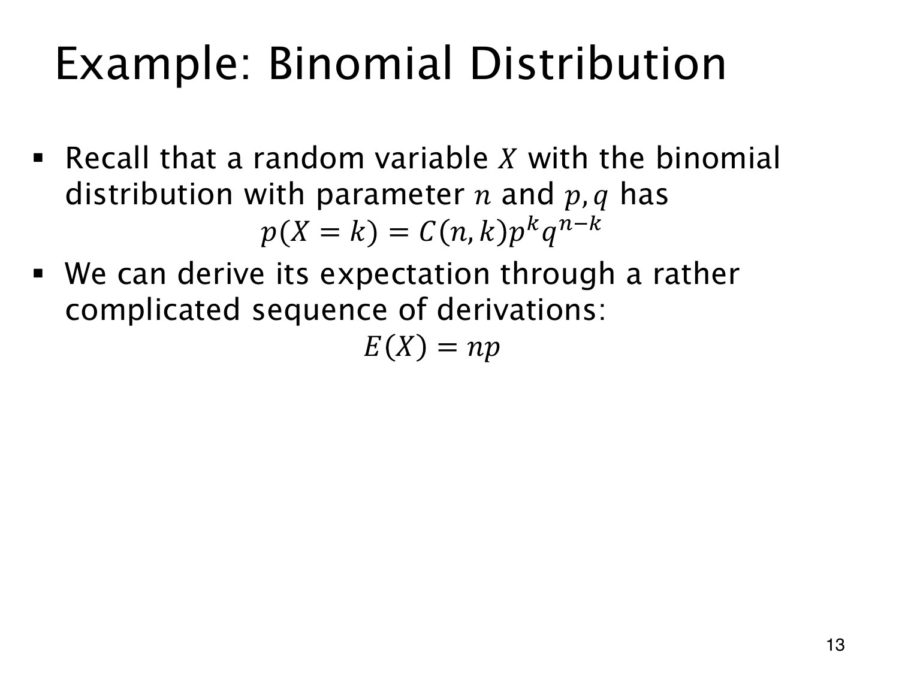

L1.11 · 第 13 页讲解原文
查看这一页课件

从二项 pmf 推出期望
X∼Bin(n,p)，记 q=1−p。成功次数的期望是 np：n 次试验每次平均贡献 p 次成功。从分布出发可写成
E(X)=k=1∑nk(kn)pkqn−k.
k=0 的项为 0。利用 k(kn)=n(k−1n−1)，提取 np：
E(X)=npk=1∑n(k−1n−1)pk−1qn−k=np(p+q)n−1=np.
余下的和恰为 n−1 次二项展开。n=0 时成功次数恒为 0，另行处理；p=0 或 1 时，结果也符合确定情形。
七次独立抛正面概率 2/3 的硬币，期望为 14/3，无须是整数；三次公平抛币则为 3/2，与前页一致。
课件说直接推导较复杂，指的是这次分布求和需要组合恒等式。随机变量分解与期望线性性也能得到同一结论，计算更短。